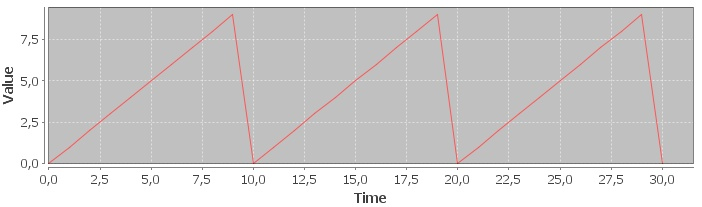
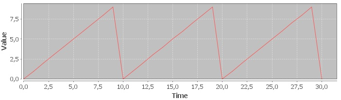
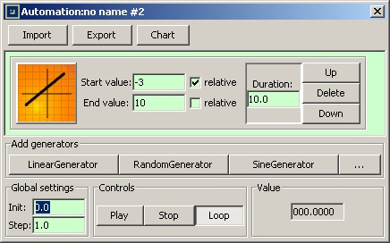
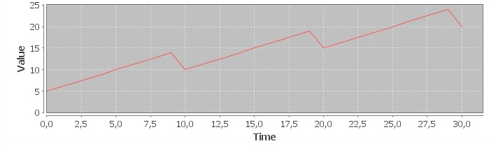
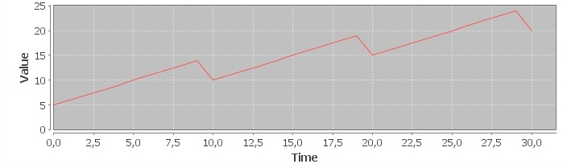

The Linear generator acts like a mathematical linear function of the
The Linear generator acts like a mathematical linear function of the
f(x)=ax+bkind. The first and the final values must be specified so that the “a” and “b” parameters are computed automatically.
The Linear generator acts like a mathematical linear function of the
f(x)=ax+b
kind. The first and the final values must be
specified so that the “a” and “b” parameters are computed automatically.
A large variety of results can be obtained by enabling or disabling
the relative
options:
relativeis enabled for the
Start value, the actual start value is the sum of the automation’s value at the moment when the generator starts and the value in the
Start valueinput box.
relativeis enabled for the
End value, the actual end value is the sum of the generator’s start value and the value in the
End valueinput box.
 



 
